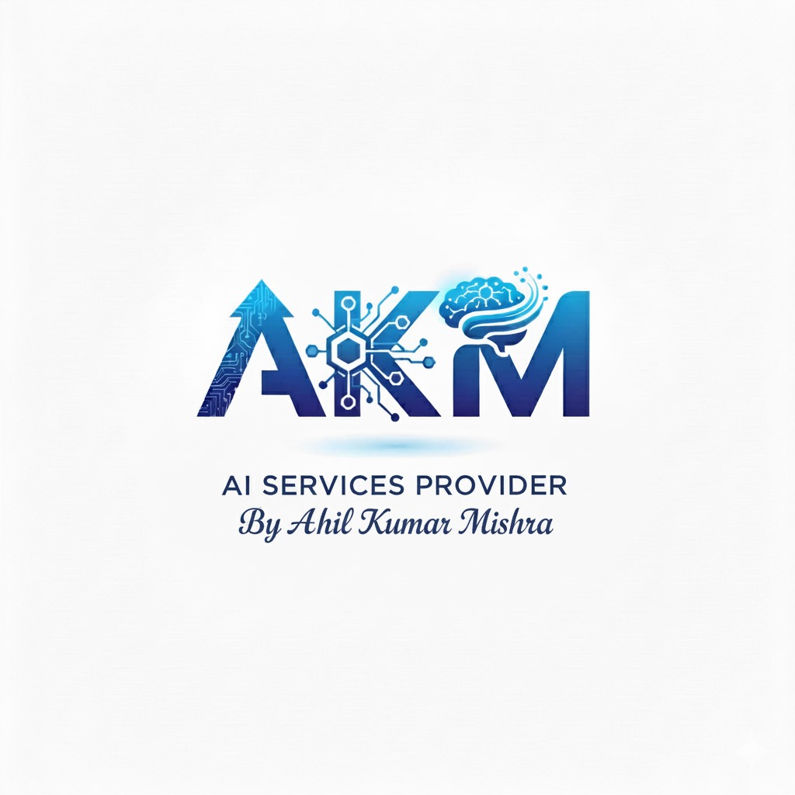
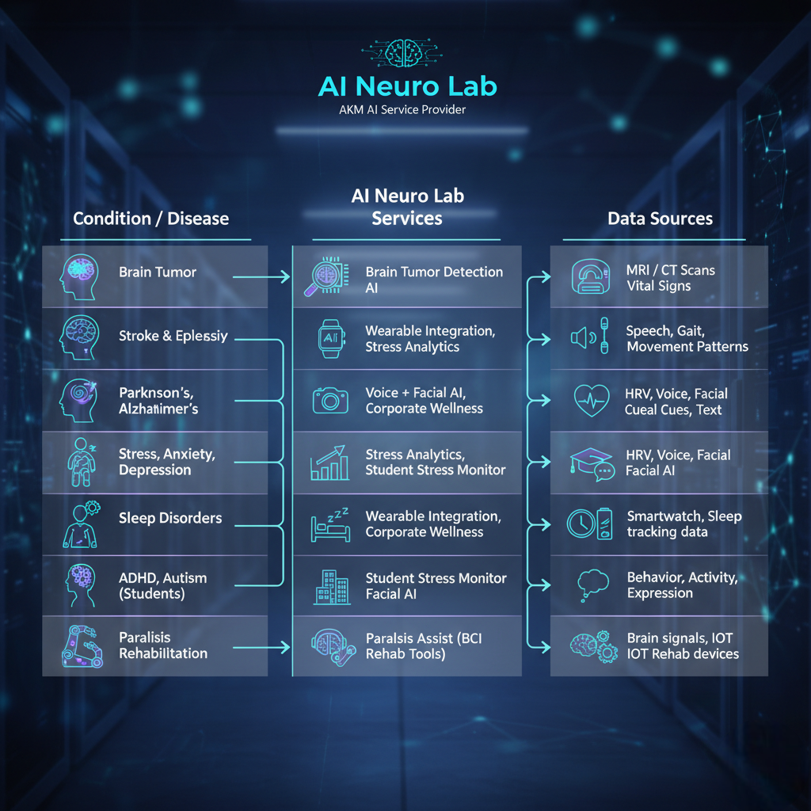

AI Neuro Lab
by AKM

AKM founded by visionary technologist Akhil Kumar Mishra, stands at the intersection of artificial intelligence and human health. We specialize in pioneering AI-driven solutions for neurology and mental wellness. Our platforms range from advanced brain tumor detection and cognitive decline prediction to sophisticated stress analytics and AI-powered rehabilitation tools. Our core mission is to harness AI to enhance neurological care, promote mental wellbeing, and empower human potential.
Our Brain Tumor Detection AI is an advanced clinical support tool designed for radiologists and oncologists. Leveraging powerful deep learning models, it analyzes MRI and CT scans to identify and delineate potential tumors with remarkable speed and precision. The AI is trained on vast datasets to recognize even the most subtle abnormalities, acting as a vigilant second opinion to augment the clinician’s expertise. This significantly accelerates the diagnostic workflow and enhances accuracy, increasing the probability of early detection. By empowering healthcare professionals with data-driven insights, our platform helps improve diagnostic confidence and ultimately leads to better patient outcomes.
Our Student Stress Monitor is an AI platform dedicated to supporting the mental wellbeing of students in modern academic environments. The system proactively identifies early signs of stress, anxiety, and academic burnout by analyzing academic and behavioral patterns while ensuring privacy. It sends timely, confidential alerts to educators and parents when potential issues are detected, enabling early, supportive intervention. The platform also provides personalized resources to help students build resilience. Our goal is to foster a healthier learning environment, empowering students to thrive emotionally and academically for long-term success.
Experience the future of wellness assessment with our Voice + Facial AI Stress Test. This tool provides a rapid, objective measure of your emotional state. Our advanced AI analyzes both vocal biomarkers—like tone, pitch, and speech patterns—and subtle facial micro-expressions during a short interaction, such as a video call. This dual-analysis method offers a highly accurate, real-time snapshot of stress and anxiety levels, going beyond what is visible to the naked eye. It is a non-invasive, data-driven approach, providing quick insights for telehealth, corporate wellness programs, and personal health tracking.
Elevate your workforce with our Corporate Wellness AI, a strategic platform that moves beyond generic perks. Our system analyzes anonymized organizational data to understand the root causes of stress and burnout specific to your company. Based on these insights, the AI designs and delivers a truly personalized wellness program, offering targeted workshops, mindfulness resources, and individual coaching pathways. This proactive and data-driven approach not only supports employee wellbeing but also directly impacts your bottom line. We empower you to build a resilient, engaged culture, boosting productivity, increasing retention, and maximizing your return on wellness investment.
Our Paralysis Assist AI Rehab Tools empower the recovery journey for individuals affected by paralysis. This innovative suite uses AI to create personalized and adaptive rehabilitation programs. Using technologies like computer vision and Brain-Computer Interfaces, our system offers engaging, gamified exercises that motivate patients and promote neuroplasticity. The AI meticulously tracks every movement and milestone, providing real-time feedback and objective data for patients and their therapists. By making rehabilitation more interactive and measurable, we aim to restore function, build confidence, and help patients reclaim their vital independence.
Our Advanced Neural Rehabilitation AI is the next frontier in neurological recovery, designed for complex conditions like stroke and brain injury. Moving beyond conventional therapy, our platform focuses directly on rewiring neural pathways. The AI creates hyper-personalized regimens using immersive VR/AR environments and Brain-Computer Interfaces to stimulate targeted brain regions. Its predictive analytics engine monitors neural feedback, adapting exercises in real-time to maximize neuroplasticity and break through recovery plateaus. This data-driven approach provides clinicians with deep insights, accelerates patient progress, and redefines the potential of modern neuro-rehabilitation.
Our Cognitive Decline Prediction AI is a groundbreaking tool for proactive neurological health, identifying early signs of cognitive impairment years before they become apparent. By analyzing longitudinal data—including cognitive tests, speech patterns, and behavioral markers—our advanced machine learning models calculate a predictive risk score. This early warning system empowers clinicians and families with crucial foresight, enabling timely lifestyle interventions, care planning, and opportunities for clinical trial enrollment. We aim to shift the paradigm from late-stage diagnosis to the proactive management of long-term cognitive health, improving future quality of life.
